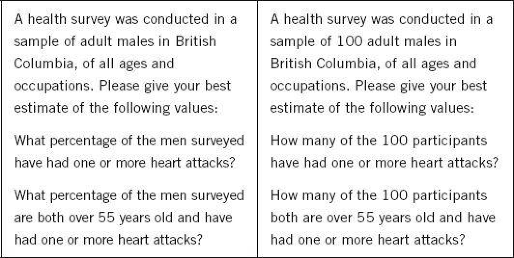

The best-known and most controversial of our experiments involved a fictitious lady called Linda. Amos and I made up the Linda problem to provide conclusive evidence of the role of heuristics in judgment and of their incompatibility with logic. This is how we described Linda:
Linda is thirty-one years old, single, outspoken, and very bright. She majored in philosophy. As a student, she was deeply concerned with issues of discrimination and social justice, and also participated in antinuclear demonstrations.
The audiences who heard this description in the 1980s always laughed because they immediately knew that Linda had attended the University of California at Berkeley, which was famous at the time for its radical, politically engaged students. In one of our experiments we presented participants with a list of eight possible scenarios for Linda. As in the Tom W problem, some ranked the scenarios by representativeness, others by probability. The Linda problem is similar, but with a twist.
Linda is a teacher in elementary school.
Linda works in a bookstore and takes yoga classes.
Linda is active in the feminist movement.
Linda is a psychiatric social worker.
Linda is a member of the League of Women Voters.
Linda is a bank teller.
Linda is an insurance salesperson.
Linda is a bank teller and is active in the feminist movement.
The problem shows its age in several ways. The League of Women Voters is no longer as prominent as it was, and the idea of a feminist “movement” sounds quaint, a testimonial to the change in the status of women over the last thirty years. Even in the Facebook era, however, it is still easy to guess the almost perfect consensus of judgments: Linda is a very good fit for an active feminist, a fairly good fit for someone who works in a bookstore and takes yoga classes—and a very poor fit for a bank teller or an insurance salesperson.
Now focus on the critical items in the list: Does Linda look more like a bank teller, or more like a bank teller who is active in the feminist movement? Everyone agrees that Linda fits the idea of a “feminist bank teller” better than she fits the stereotype of bank tellers. The stereotypical bank teller is not a feminist activist, and adding that detail to the description makes for a more coherent story.
The twist comes in the judgments of likelihood, because there is a logical relation between the two scenarios. Think in terms of Venn diagrams. The set of feminist bank tellers is wholly included in the set of bank tellers, as every feminist bank teller is0%"ustwora ban0%" w a bank teller. Therefore the probability that Linda is a feminist bank teller must be lower than the probability of her being a bank teller. When you specify a possible event in greater detail you can only lower its probability. The problem therefore sets up a conflict between the intuition of representativeness and the logic of probability.
Our initial experiment was between-subjects. Each participant saw a set of seven outcomes that included only one of the critical items (“bank teller” or “feminist bank teller”). Some ranked the outcomes by resemblance, others by likelihood. As in the case of Tom W, the average rankings by resemblance and by likelihood were identical; “feminist bank teller” ranked higher than “bank teller” in both.
Then we took the experiment further, using a within-subject design. We made up the questionnaire as you saw it, with “bank teller” in the sixth position in the list and “feminist bank teller” as the last item. We were convinced that subjects would notice the relation between the two outcomes, and that their rankings would be consistent with logic. Indeed, we were so certain of this that we did not think it worthwhile to conduct a special experiment. My assistant was running another experiment in the lab, and she asked the subjects to complete the new Linda questionnaire while signing out, just before they got paid.
About ten questionnaires had accumulated in a tray on my assistant’s desk before I casually glanced at them and found that all the subjects had ranked “feminist bank teller” as more probable than “bank teller.” I was so surprised that I still retain a “flashbulb memory” of the gray color of the metal desk and of where everyone was when I made that discovery. I quickly called Amos in great excitement to tell him what we had found: we had pitted logic against representativeness, and representativeness had won!
In the language of this book, we had observed a failure of System 2: our participants had a fair opportunity to detect the relevance of the logical rule, since both outcomes were included in the same ranking. They did not take advantage of that opportunity. When we extended the experiment, we found that 89% of the undergraduates in our sample violated the logic of probability. We were convinced that statistically sophisticated respondents would do better, so we administered the same questionnaire to doctoral students in the decision-science program of the Stanford Graduate School of Business, all of whom had taken several advanced courses in probability, statistics, and decision theory. We were surprised again: 85% of these respondents also ranked “feminist bank teller” as more likely than “bank teller.”
In what we later described as “increasingly desperate” attempts to eliminate the error, we introduced large groups of people to Linda and asked them this simple question:
Which alternative is more probable?
Linda is a bank teller.
Linda is a bank teller and is active in the feminist movement.
This stark version of the problem made Linda famous in some circles, and it earned us years of controversy. About 85% to 90% of undergraduates at several major universities chose the second option, contrary to logic. Remarkably, the sinners seemed to have no shame. When I asked my large undergraduatnite class in some indignation, “Do you realize that you have violated an elementary logical rule?” someone in the back row shouted, “So what?” and a graduate student who made the same error explained herself by saying, “I thought you just asked for my opinion.”
The word fallacy is used, in general, when people fail to apply a logical rule that is obviously relevant. Amos and I introduced the idea of a conjunction fallacy, which people commit when they judge a conjunction of two events (here, bank teller and feminist) to be more probable than one of the events (bank teller) in a direct comparison.
As in the Müller-Lyer illusion, the fallacy remains attractive even when you recognize it for what it is. The naturalist Stephen Jay Gould described his own struggle with the Linda problem. He knew the correct answer, of course, and yet, he wrote, “a little homunculus in my head continues to jump up and down, shouting at me—‘but she can’t just be a bank teller; read the description.’” The little homunculus is of course Gould’s System 1 speaking to him in insistent tones. (The two-system terminology had not yet been introduced when he wrote.)
The correct answer to the short version of the Linda problem was the majority response in only one of our studies: 64% of a group of graduate students in the social sciences at Stanford and at Berkeley correctly judged “feminist bank teller” to be less probable than “bank teller.” In the original version with eight outcomes (shown above), only 15% of a similar group of graduate students had made that choice. The difference is instructive. The longer version separated the two critical outcomes by an intervening item (insurance salesperson), and the readers judged each outcome independently, without comparing them. The shorter version, in contrast, required an explicit comparison that mobilized System 2 and allowed most of the statistically sophisticated students to avoid the fallacy. Unfortunately, we did not explore the reasoning of the substantial minority (36%) of this knowledgeable group who chose incorrectly.
The judgments of probability that our respondents offered, in both the Tom W and Linda problems, corresponded precisely to judgments of representativeness (similarity to stereotypes). Representativeness belongs to a cluster of closely related basic assessments that are likely to be generated together. The most representative outcomes combine with the personality description to produce the most coherent stories. The most coherent stories are not necessarily the most probable, but they are plausible, and the notions of coherence, plausibility, and probability are easily confused by the unwary.
The uncritical substitution of plausibility for probability has pernicious effects on judgments when scenarios are used as tools of forecasting. Consider these two scenarios, which were presented to different groups, with a request to evaluate their probability:
A massive flood somewhere in North America next year, in which more than 1,000 people drown
An earthquake in California sometime next year, causing a flood in which more than 1,000 people drown
The California earthquake scenario is more plausible than the North America scenario, although its probability is certainly smaller. As expected, probability judgments were higher for the richer and more entdetailed scenario, contrary to logic. This is a trap for forecasters and their clients: adding detail to scenarios makes them more persuasive, but less likely to come true.
To appreciate the role of plausibility, consider the following questions:
Which alternative is more probable?
Mark has hair.
Mark has blond hair.
and
Which alternative is more probable?
Jane is a teacher.
Jane is a teacher and walks to work.
The two questions have the same logical structure as the Linda problem, but they cause no fallacy, because the more detailed outcome is only more detailed—it is not more plausible, or more coherent, or a better story. The evaluation of plausibility and coherence does not suggest and answer to the probability question. In the absence of a competing intuition, logic prevails.
Less Is More, Sometimes Even In Joint Evaluation
Christopher Hsee, of the University of Chicago, asked people to price sets of dinnerware offered in a clearance sale in a local store, where dinnerware regularly runs between $30 and $60. There were three groups in his experiment. The display below was shown to one group; Hsee labels that joint evaluation, because it allows a comparison of the two sets. The other two groups were shown only one of the two sets; this is single evaluation. Joint evaluation is a within-subject experiment, and single evaluation is between-subjects.
|
|
Set A: 40 pieces |
Set B: 24 pieces |
|
Dinner plates |
8, all in good condition |
8, all in good condition |
|
Soup/salad bowls |
8, all in good condition |
8, all in good condition |
|
Dessert plates |
8, all in good condition |
8, all in good condition |
|
Cups |
8, 2 of them broken |
|
|
Saucers |
8, 7 of them broken |
|
Assuming that the dishes in the two sets are of equal quality, which is worth more? This question is easy. You can see that Set A contains all the dishes of Set B, and seven additional intact dishes, and it must be valued more. Indeed, the participants in Hsee’s joint evaluation experiment were willing to pay a little more for Set A than for Set B: $32 versus $30.
The results reversed in single evaluation, where Set B was priced much higher than Set A: $33 versus $23. We know why this happened. Sets (including dinnerware sets!) are represented by norms and prototypes. You can sense immediately that the average value of the dishes is much lower for Set A than for Set B, because no one wants to pay for broken dishes. If the average dominates the evaluation, it is not surprising that Set B is valued more. Hsee called the resulting pattern less is more. By removing 16 items from Set A (7 of them intact), its value is improved.
Hsee’s finding was replicated by the experimental economist John List in a real market for baseball cards. He auctioned sets of ten high-value cards, and identical sets to which three cards of modest value were added. As in the dinnerware experiment, the larger sets were valued more than the smaller ones in joint evaluation, but less in single evaluation. From the perspective of economic theory, this result is troubling: the economic value of a dinnerware set or of a collection of baseball cards is a sum-like variable. Adding a positively valued item to the set can only increase its value.
The Linda problem and the dinnerware problem have exactly the same structure. Probability, like economic value, is a sum-like variable, as illustrated by this example:
probability (Linda is a teller) = probability (Linda is feminist teller) + probability (Linda is non-feminist teller)
This is also why, as in Hsee’s dinnerware study, single evaluations of the Linda problem produce a less-is-more pattern. System 1 averages instead of adding, so when the non-feminist bank tellers are removed from the set, subjective probability increases. However, the sum-like nature of the variable is less obvious for probability than for money. As a result, joint evaluation eliminates the error only in Hsee’s experiment, not in the Linda experiment.
Linda was not the only conjunction error that survived joint evaluation. We found similar violations of logic in many other judgments. Participants in one of these studies were asked to rank four possible outcomes of the next Wimbledon tournament from most to least probable. Björn Borg was the dominant tennis player of the day when the study was conducted. These were the outcomes:
A. Borg will win the match.
B. Borg will lose the first set.
C. Borg will lose the first set but win the match.
D. Borg will win the first set but lose the match.
The critical items are B and C. B is the more inclusive event and its probability must be higher than that of an event it includes. Contrary to logic, but not to representativeness or plausibility, 72% assigned B a lower probability than C—another instance of less is more in a direct comparison. Here si again, the scenario that was judged more probable was unquestionably more plausible, a more coherent fit with all that was known about the best tennis player in the world.
To head off the possible objection that the conjunction fallacy is due to a misinterpretation of probability, we constructed a problem that required probability judgments, but in which the events were not described in words, and the term probability did not appear at all. We told participants about a regular six-sided die with four green faces and two red faces, which would be rolled 20 times. They were shown three sequences of greens (G) and reds (R), and were asked to choose one. They would (hypothetically) win $25 if their chosen sequence showed up. The sequences were:
Because the die has twice as many green as red faces, the first sequence is quite unrepresentative—like Linda being a bank teller. The second sequence, which contains six tosses, is a better fit to what we would expect from this die, because it includes two G’s. However, this sequence was constructed by adding a G to the beginning of the first sequence, so it can only be less likely than the first. This is the nonverbal equivalent to Linda being a feminist bank teller. As in the Linda study, representativeness dominated. Almost two-thirds of respondents preferred to bet on sequence 2 rather than on sequence 1. When presented with arguments for the two choices, however, a large majority found the correct argument (favoring sequence 1) more convincing.
The next problem was a breakthrough, because we finally found a condition in which the incidence of the conjunction fallacy was much reduced. Two groups of subjects saw slightly different variants of the same problem:

The incidence of errors was 65% in the group that saw the problem on the left, and only 25% in the group that saw the problem on the right.
Why is the question “How many of the 100 participants…” so much easier than “What percentage…”? A likely explanation is that the reference to 100 individuals brings a spatial representation to mind. Imagine that a large number of people are instructed to sort themselves into groups in a room: “Those whose names begin with the letters A to L are told to gather in the front left corner.” They are then instructed to sort themselves further. The relation of inclusion is now obvious, and you can see that individuals whose name begins with C will be a subset of the crowd in the front left corner. In the medical survey question, heart attack victims end up in a corner of the room, and some of them are less than 55 years old. Not everyone will share this particular vivid imagery, but many subsequent experiments have shown that the frequency representation, as it is known, makes it easy to appreciate that one group is wholly included in the other. The solution to the puzzle appears to be that a question phrased as “how many?” makes you think of individuals, but the same question phrased as “what percentage?” does not.
What have we learned from these studies about the workings of System 2? One conclusion, which is not new, is that System 2 is not impressively alert. The undergraduates and graduate students who participated in our thastudies of the conjunction fallacy certainly “knew” the logic of Venn diagrams, but they did not apply it reliably even when all the relevant information was laid out in front of them. The absurdity of the less-is-more pattern was obvious in Hsee’s dinnerware study and was easily recognized in the “how many?” representation, but it was not apparent to the thousands of people who have committed the conjunction fallacy in the original Linda problem and in others like it. In all these cases, the conjunction appeared plausible, and that sufficed for an endorsement of System 2.
The laziness of System 2 is part of the story. If their next vacation had depended on it, and if they had been given indefinite time and told to follow logic and not to answer until they were sure of their answer, I believe that most of our subjects would have avoided the conjunction fallacy. However, their vacation did not depend on a correct answer; they spent very little time on it, and were content to answer as if they had only been “asked for their opinion.” The laziness of System 2 is an important fact of life, and the observation that representativeness can block the application of an obvious logical rule is also of some interest.
The remarkable aspect of the Linda story is the contrast to the broken-dishes study. The two problems have the same structure, but yield different results. People who see the dinnerware set that includes broken dishes put a very low price on it; their behavior reflects a rule of intuition. Others who see both sets at once apply the logical rule that more dishes can only add value. Intuition governs judgments in the between-subjects condition; logic rules in joint evaluation. In the Linda problem, in contrast, intuition often overcame logic even in joint evaluation, although we identified some conditions in which logic prevails.
Amos and I believed that the blatant violations of the logic of probability that we had observed in transparent problems were interesting and worth reporting to our colleagues. We also believed that the results strengthened our argument about the power of judgment heuristics, and that they would persuade doubters. And in this we were quite wrong. Instead, the Linda problem became a case study in the norms of controversy.
The Linda problem attracted a great deal of attention, but it also became a magnet for critics of our approach to judgment. As we had already done, researchers found combinations of instructions and hints that reduced the incidence of the fallacy; some argued that, in the context of the Linda problem, it is reasonable for subjects to understand the word “probability” as if it means “plausibility.” These arguments were sometimes extended to suggest that our entire enterprise was misguided: if one salient cognitive illusion could be weakened or explained away, others could be as well. This reasoning neglects the unique feature of the conjunction fallacy as a case of conflict between intuition and logic. The evidence that we had built up for heuristics from between-subjects experiment (including studies of Linda) was not challenged—it was simply not addressed, and its salience was diminished by the exclusive focus on the conjunction fallacy. The net effect of the Linda problem was an increase in the visibility of our work to the general public, and a small dent in the credibility of our approach among scholars in the field. This was not at all what we had expected.
If you visit a courtroom you will observe that lawyers apply two styles of criticism: to demolish a case they raise doubts about the strongest arguments that favor it; to discredit a witness, they focus on the weakest part of the testimony. The focus on weaknesses is also normal in politicaverl debates. I do not believe it is appropriate in scientific controversies, but I have come to accept as a fact of life that the norms of debate in the social sciences do not prohibit the political style of argument, especially when large issues are at stake—and the prevalence of bias in human judgment is a large issue.
Some years ago I had a friendly conversation with Ralph Hertwig, a persistent critic of the Linda problem, with whom I had collaborated in a vain attempt to settle our differences. I asked him why he and others had chosen to focus exclusively on the conjunction fallacy, rather than on other findings that provided stronger support for our position. He smiled as he answered, “It was more interesting,” adding that the Linda problem had attracted so much attention that we had no reason to complain.
Speaking of Less is More
“They constructed a very complicated scenario and insisted on calling it highly probable. It is not—it is only a plausible story.”
“They added a cheap gift to the expensive product, and made the whole deal less attractive. Less is more in this case.”
“In most situations, a direct comparison makes people more careful and more logical. But not always. Sometimes intuition beats logic even when the correct answer stares you in the face.”
P